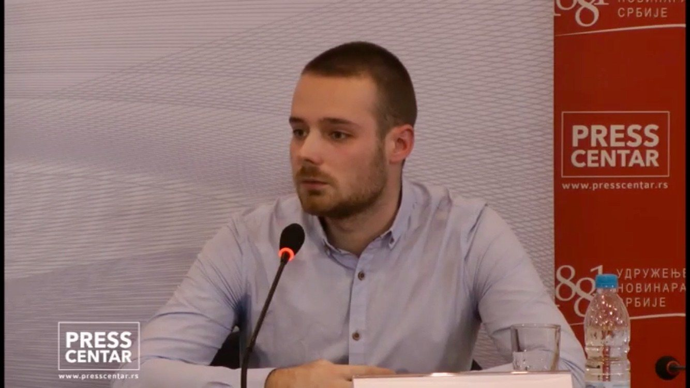

Psychologist specializing in workplace mental health, professional wellbeing and psychological support.
You may still be working, leading, studying, caring for others, and keeping everything moving. At the same time, you may feel emotionally exhausted, overwhelmed, disconnected from yourself, or under constant pressure without fully understanding why.
Sometimes people do not need someone to “fix” them. They need space to slow down, understand what they are feeling, and make sense of the emotions, expectations, and patterns that have become difficult to carry alone.
Selected experience
A background across counselling, workplace wellbeing, organizational psychology and research.
Clinical PsychologyBachelor's Degree in Clinical Psychology
Organizational PsychologyMaster's Degree in Industrial and Organizational Psychology
Client support2 years of psychological counselling and individual support
Workplace researchPhD candidate researching workplace mental health and wellbeing
Formal Education
A foundation across clinical psychology, organizational psychology and workplace mental health.
My background combines clinical psychology, organizational psychology and workplace mental health research. I hold a Bachelor's Degree in Clinical Psychology, a Master's Degree in Industrial and Organizational Psychology, and I am currently a PhD candidate researching workplace mental health and wellbeing.
Professional Background
Experience across individual support, organizations and research.
My professional experience combines individual psychological support, organizational psychology, workplace wellbeing and research.
Why My Approach Is Different
Counselling experience, organizational psychology and workplace research in one profile.
How I support workplace mental health
Psychological depth, with an understanding of organizational pressure.
Support should feel human, structured and connected to real organizational environments. The aim is to help people and organizations understand pressure more clearly, reduce burnout risk and build healthier, more sustainable ways of working.
My work sits at the intersection of workplace mental health, organizational wellbeing and psychologically informed support. Alongside counseling and suicide prevention experience, I have spent years working in international corporate environments and multicultural professional settings. This helps me understand stress not only emotionally, but also within the realities of international work environments, relocation, communication and adaptation across professional cultures.
For professionals, this can mean support with stress, high-pressure environments, self-understanding, work pressure, transitions, relationships, identity, or feeling stuck. For organizations, it can mean burnout prevention, workplace mental health and organizational wellbeing strategy, leadership support, employee support, EAP-style collaboration and psychologically informed workshops.
The goal is not to make everything feel clinical. The goal is to make psychologically informed support useful, emotionally understandable, and connected to the choices people face in everyday life.
Public mental health experience
Trusted in public conversations on workplace mental health, burnout, workplace pressure, and psychologically informed support.
Previous public work includes mental health awareness, burnout prevention, workplace pressure, media appearances, community projects, and discussions connected to wellbeing and mental health policy.

This may not be the right fit if you need...
If you are in immediate danger or crisis, contact emergency services or a licensed clinical provider in your jurisdiction.
This may be a good fit if you want support that feels human, structured, and useful.
You do not need to wait until things become unmanageable. Support can be useful when pressure, stress, or emotional strain starts affecting your wellbeing, work, relationships, or decision-making.